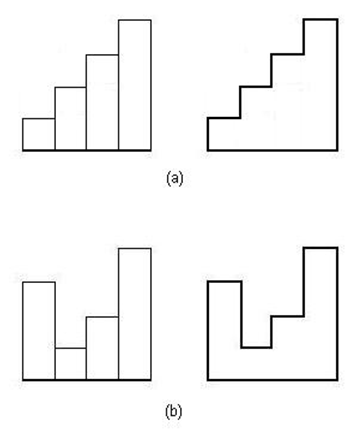
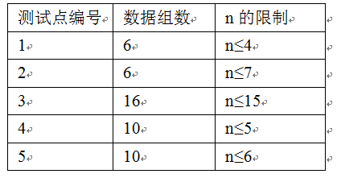

原文连接:https://www.cnblogs.com/I-Love-You-520/p/11626621.html
T1 彩虹
题目
【题目描述】
Mr.Raju和他的一个大家庭外出度假，他们想要乘着彩虹欣赏周围的景色，但是这样最会有一些问题。
在他们家族中，如果一个人想要骑上彩虹，那么他喜欢的所有人和喜欢他的所有人都必须一同骑上彩虹。如果一个人没有喜欢的人，也没有人喜欢他，那么他也可以乘上彩虹。
你被请来解决这个难题，我们会提供给你家族所有成员的体重，以及每个人喜欢的人的列表，同样给出的还有彩虹能承受的总重量，你需要计算出在以上条件下彩虹所能承载的最多人数。
为了方便描述，所有的家庭成员都被标号，从1到n。
【输入格式】
有多组数据，每组数据之间有一空行。
对于每一组数据，第一行为整数n(1≤n≤1000)和c(0≤c≤1000),n表示家庭成员的总人数，c表示彩虹的承载量。
第二行为n个数为1到n个家庭成员的体重（体重是1000以内的正整数）。
接下来n行，每行第一个数k[i]表示第i个人有多少喜欢的人，接下来k[i]个整数为他喜欢的人的编号。
当n=0，c=0是表示数据结束。保证数据组数不超过3。
【输出格式】
对于每一组数据，输出可以同时骑彩虹的最大人数。（输出的每个答案之间不要空行）。
【输入样例】
5 200
50 50 50 50 50
1 2
1 3
0
1 5
1 4
3 200
100 100 100
1 2
1 3
1 1
0 0【输出样例】
3
0【数据规模】
对于20%的数据：n≤8；
对于100%的数据：n,c≤1000。
解析
先用并查集将每个人与其喜欢的人合并起来，计算他们的总重量与总人数。
再跑一遍01背包即可。
Code


#include <algorithm> #include <iostream> #include <cstring> #include <string> #include <cstdio> #include <cmath> using namespace std; int read() { int num=0,w=1; char ch=getchar(); while(ch<'0'||ch>'9') { if(ch=='-') w=-1; ch=getchar(); } while(ch>='0'&&ch<='9') { num=(num<<1)+(num<<3)+ch-'0'; ch=getchar(); } return num*w; } const int N=1010; int n,C,a[N],b[N],c[N],fa[N],f[N],maxn; int get(int x) { if(fa[x]==x) return x; return fa[x]=get(fa[x]); } int main() { //freopen("rainbow.in","r",stdin); //freopen("rainbow.out","w",stdout); while(1) { n=read(),C=read(),maxn=0; if(n==0&&C==0) break; memset(f,0,sizeof(f)); for(int i=1;i<=n;i++) a[i]=read(),b[i]=0,c[i]=0,fa[i]=i; for(int i=1;i<=n;i++) { int k=read(); for(int j=1;j<=k;j++) { int x=read(); fa[get(i)]=get(x); } } for(int i=1;i<=n;i++) { int temp=get(i); b[temp]+=a[i],c[temp]++; } for(int i=1;i<=n;i++) if(b[i]!=0) for(int j=C;j>=b[i];j--) f[j]=max(f[j],f[j-b[i]]+c[i]); for(int i=0;i<=C;i++) maxn=max(maxn,f[i]); cout<<maxn<<endl; } return 0; }
T2 红十字
题目
【题目描述】
通往藏宝库的通道打开了，走下一段长长的楼梯，钻过一条矮矮的地道，你和小可可终于来到了藏宝库的门前。随之而来的就是最后一个挑战，只要能打开宝库的门，里面的宝藏就是你们的了。
宝库的门依然是通过机关打开，这个门很奇怪，是一个正方形，被划分成许多大小一致的正方形的小方格，这些方格不是红色就是白色，猛看上去这些方格组成了许多红十字状的标志。根据藏宝图记载，只要找到门上最大的红十字，按下它中心的方格，宝库的门就能打开了。
红十字标志也是一个正方形，边长为(2k+1)*(2k+1)，其中k为非负整数。它的四条边与门的边平行，而且恰由门上的(2k+1)*(2k+1)个小方格组成。这里，红十字标志是以白色为底色，红色为十字的颜色。假设用1表示红色，用0表示白色。对应到计算机处理的数据中，就是除了正中列与正中行全为1外，其余方格均为0。
以下是几种不同大小的标志：
1*1:
1
3*3
010
111
010
5*5
00100
00100
11111
00100
00100
小可可被这个机关难到了，现在只有靠你了，请你帮助他在这个门上找到一个最大的红十字标志，输出它的边长即可。
【输入格式】
本题输入量巨大，推荐使用以下输入方法：
scanf("%d\n", &n);
for (i = 1; i<= n; i++) scanf("%s", s[i] + 1);
for (i = 1; i<= n; i++)
for (j = 1; j <= n; j++)
a[i][j] = s[i][j] - '0';
其中n是宝库的门的边长，s是字符数组，a[i][j]是第i行第j列的数值。
【输出格式】
对于每个询问输出一行表示答案。
【输入样例】
5
00011
01011
11100
01001
00010【输出样例】
3 【数据规模】
对于30%的数据，n≤100。
对于50%的数据，n≤500。
对于100%的数据，n≤2000。
解析
用sum纪录子矩阵的值。
对于以(x,y)为中心且长度为k的矩阵，如果是红十字，那么以(x,y)为中心且长度为k-2(k>=3)的矩阵必然也是红十字。
所以可以枚举红十字的中心，求出以(x,y)为中心的最大红十字的边长，具体可以用二分实现。
Code
#include<bits/stdc++.h> using namespace std; const int N=2005; int n,a[N][N],sum[N][N],ans; char s[N][N]; int dfs(int lx,int ly,int rx,int ry) { return sum[rx][ry]+sum[lx-1][ly-1]-sum[lx-1][ry]-sum[rx][ly-1]; } int main() { scanf("%d\n",&n); for(int i=1;i<=n;i++) scanf("%s",s[i]+1); for(int i=1;i<=n;i++) for(int j=1;j<=n;j++) a[i][j]=s[i][j]-'0',sum[i][j]=sum[i-1][j]+sum[i][j-1]-sum[i-1][j-1]+a[i][j]; for(int i=1;i<=n;i++) for(int j=1;j<=n;j++) if(a[i][j]) { int l=1,r=min(min(i,j),min(n-i+1,n-j+1)),cnt=1; while(l<=r) { int mid=(l+r)>>1; if(dfs(i-mid+1,j,i+mid-1,j)==mid*2-1&&dfs(i,j-mid+1,i,j+mid-1)==mid*2-1&&dfs(i-mid+1,j-mid+1,i+mid-1,j+mid-1)==mid*4-3) l=mid+1,cnt=mid; else r=mid-1; } ans=max(ans,cnt*2-1); } printf("%d",ans); return 0; }
T3 柱状图
题目
【题目描述】
在统计学中，柱状图是用来描述事件发生频率的一种图形语言，它是一种锯齿形的多边形，可以看做是一些长方形排列而成的。这些长方形的底边同为一个单位长度，但它们有不同的高度。对于给定的长方形，某些排列会使组成的多边形达到周长最长。你的任务是找出最长的周长以及构成最长周长的可能排列总数。

在图（a）中，组成多边形的长方形高度分别为{1，2，3，4}，它的周长为16个单位长度。在图（b）中，组成多边形的长方形高度分别为{3，1，2，4}，它的周长为20个单位长度。
【输入格式】
输入文件包含多组数据。
每组数据第一行为一个整数n (2≤n≤15)，描述有一共有多少个长方形。第二行为n个整数，表示n个长方形的高。
当n=0 时，表示输入数据结束。保证数据组数不超过16。
【输出格式】
对于每组数据，输出一个整数表示答案。
【输入样例】
4
1 2 3 4
3
2 6 5
0【输出样例】
20 8
24 2【数据规模】

解析
不难发现，这题其实是全排列。
Code
#include<iostream> #include<cstring> #include<cstdio> #include<algorithm> using namespace std; inline int read() { int num=0,w=1; char ch=getchar(); while(ch<'0'||ch>'9') { if(ch=='-') w=-1; ch=getchar(); } while(ch>='0'&&ch<='9') { num=(num<<1)+(num<<3)+ch-'0'; ch=getchar(); } return num*w; } int n,a[100],ans=0,tot,f[100]; long long sum; int main() { n=read(),f[0]=1; for(int i=1;i<=10;i++) f[i]=f[i-1]*i; while(n) { tot=n*2,ans=0; for(int i=1;i<=n;i++) a[i]=read(),tot+=a[i]*2; sort(a+1,a+1+n); if(n%2==1) { for(int i=1;i<=(n-1)/2;i++) ans+=a[i]*4; sum=f[n/2+1]*f[n/2]; } else { for(int i=1;i<=n/2-1;i++) ans+=a[i]*4; ans+=a[n/2]*2,sum=f[n/2-1]*f[n/2]*n; } cout<<tot-ans<<" "<<sum<<endl; n=read(); } return 0; }
T4 最长公共子序列
题目
【题目描述】
给定两个长度为5n的序列A,B。保证1~n这n个数在A,B中分别出现5次。求A,B最长公共子序列。
【输入格式】
第一行一个正整数n。
接下来两行，每行5n个正整数，表示序列A,B。
【输出格式】
输出一个整数，最长公共子序列的长度。
【输入样例】
2
1 1 2 2 1 1 2 1 2 2
1 2 2 2 1 1 2 2 1 1【输出样例】
7 【数据规模】
对于30%的数据，n≤10。
对于60%的数据，n≤1000。
对于100%的数据，n≤20000。
解析
一下来自于出题人的题解。
注意1~n这n个数分别在A与B中出现5次。
枚举i，并维护f[j]表示A[1...i]和B[1...j]的最长公共子序列，且以B[j]为结尾。
对于每个x，用二维数组存下x在B中的所有位置，再枚举A[i]在B中的所有位置k。
此时，所有f[j]都是A[1...i-1]和B[1...j]的最长公共子序列。
令g[k]=max(f[1]~f[k-1])+1，即g[k]为A[1...i]和B[1...k]的最长公共子序列。
若B[j]!=A[i]，则g[j]=f[j]，即f[j]不改动。
所以只需做单点修改，并求前缀最大值，具体可以用树状数组维护f[j]的前缀最大值。
Code
#include <algorithm> #include <iostream> #include <cstring> #include <string> #include <cstdio> #include <vector> #include <cmath> using namespace std; inline int read() { int num=0; char ch=getchar(); while(ch<'0'||ch>'9') ch=getchar(); while(ch>='0'&&ch<='9') { num=(num<<1)+(num<<3)+ch-'0'; ch=getchar(); } return num; } const int N=2e4+5; int n,a[N*5],b[N*5],c[N*5],d[9]; vector<int> g[N*5]; void change(int x,int y) { for(int i=x;i<=n*5;i+=i&-i) c[i]=max(c[i],y); } int ask(int x) { int ans=0; for(int i=x;i;i-=i&-i) ans=max(ans,c[i]); return ans; } int main() { n=read(); for(int i=1;i<=n*5;i++) a[i]=read(); for(int i=1;i<=n*5;i++) b[i]=read(),g[b[i]].push_back(i); for(int i=1;i<=n*5;i++) { for(int j=0;j<=4;j++) { int x=g[a[i]][j]; d[j]=ask(x-1); } for(int j=0;j<=4;j++) { int x=g[a[i]][j]; change(x,d[j]+1); } } cout<<ask(n*5); return 0; }